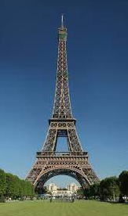
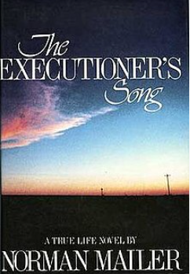

Ονομάζομαι Γιώργος Σταθόπουλος και ειμαι 22 χρονών. Εδώ και 4 χρόνια σπουδάζω στο τμήμα πληροφορικής του ΟΠΑ . Στον ελεύθερό μου χρόνο μου αρέσει να ασχολούμαι με κάποιο άθλημα, ατομικά ή με παρέα. Επίσης, μου αρέσουν τα ταξίδια στο εξωτερικό. Έχω ταξιδέψει σε αρκετές χώρες εντός της Ευρώπης.Τέλος, ένα από τα ενδιαφέροντά μου είναι το διάβασμα βιβλίων.
ΑΘΛΗΜΑΤΑ
Το αγαπημένο μου σπορ είναι το μπάσκετ. Από την ηλικία των 12 μέχρι τα 18 μου έπαιζα στον τοπικό σύλλογο. Ακόμα και τώρα, παρ'όλο που δεν συμμετέχω σε κάποια ομάδα, όποτε έχω ελεύθερο χρόνο και διάθεση μου αρέσει να πηγαίνω να παίζω είτε μόνος είτε με τους φίλους μου. Εκτός από την σωματική άσκηση με βοηθάει να καθαρίσω το μυαλό μου και να χαλαρώσω από την πίεση της ημέρας. Πέρα από το μπάσκετ, το καλοκαίρι που ανοίγει ο καιρός μου αρέσει να πηγαίνω στην παραλία για κολύμπι. Το θεωρώ ένα από τα καλύτερα είδη γυμναστικής και συνδυάζεται τέλεια με μία επίσκεψη στη θάλασσα. Σε αντίθεση με το μπάσκετ, οι συνθήκες είναι τέτοιες ώστε η ενασχόλησή μου με την κολύμβηση να είναι μικρότερη αλλά όποτε έχω την ευκαιρία και έχει καλό καιρό δεν διστάζω να πάω μία βόλτα από την παραλία.
ΤΑΞΙΔΙΑ
Όλοι μας βρίσκουμε δελεαστική την ιδέα για ένα ταξίδι πού και πού. Είναι ανανεωτικό, μας ξεκουράζει και είναι μια πολύ καλή ευκαιρία να γνωρίσουμε νέα μέρη, αξιοθέατα και πολιτισμούς. Ταξιδεύοντας, οι κοινωνικές μας δεξιότητες χτυπάνε κόκκινο. Μαθαίνουμε να επικοινωνούμε και να συνεννοούμαστε με αγνώστους και νιώθουμε πιο άνετα να κάνουμε νέες γνωριμίες. Αν και έχω αρκετές αναμνήσεις από τα ταξίδια που έχω κάνει, οι 2 χώρες που μου έκαναν μεγαλύτερη εντύπωση είναι η Γαλλία και η Αγγλία. Η πρώτη αποτελούσε έναν προορισμό που πάντοτε ήθελα να επισκεπτώ λόγω της αγάπης μου για τα γαλλικά. Αυτό που μου έκανε μεγαλύτερη εντύπωση στις 2 αυτές χώρες ήταν οι διαφορές μεταξύ του πολιτισμού τους με τον δικό μας καθώς και η καθαριότητα στους εξωτερικούς χώρους και στα μέσα μεταφοράς. Αν στο μέλλον έχω την ευκαιρία θα επιθυμούσα να τις ξαναεπισκεπτώ χωρίς δεύτερη σκέψη.
ΒΙΒΛΙΑ
Πέρα από τα αθλήματα και τα ταξίδια, όποτε έχω ελεύθερο μου αρέσει να διαβάζω βιβλία. Αν έπρεπε να επιλέξω κάποιο, αυτό θα ήταν το Executioner's Song. Πρόκειται για ένα αστυνομικό μυθιστόρημα το οποίο απεικονίζει τα γεγονόταγύρω από την εκτέλεση του Gary Gilmore για μια σειρά απο δολοφονίες που είχε διαπράξει. Ο τρόπος που ο συγγραφέας περιγράφει τα γεγονότα είναι φανταστικός. Σε κρατάει σε αγωνία μέχρι το τέλος του βιβλίου, ενώ διαβάζοντάς το νιώθεις ότι συμμετέχεις και συ στην ιστορία σαν χαρακτήρας του βιβλίου. Την πρώτη φορά που το διάβασα είχα ενθουσιαστεί αρκετά, ειδικά με το τέλος του. Από τότε το έχω διαβάσει άλλες 2 φορές και κάθε μία από αυτές εντυπωσιάζομαι με κάτι νέο. Είναι ένα αρκετά ενδιαφέρον βιβλίο το οποίο το προτείνω σε όλους όσους έχουν κόλλημα με τα αστυνομικά μυθιστορήματα.